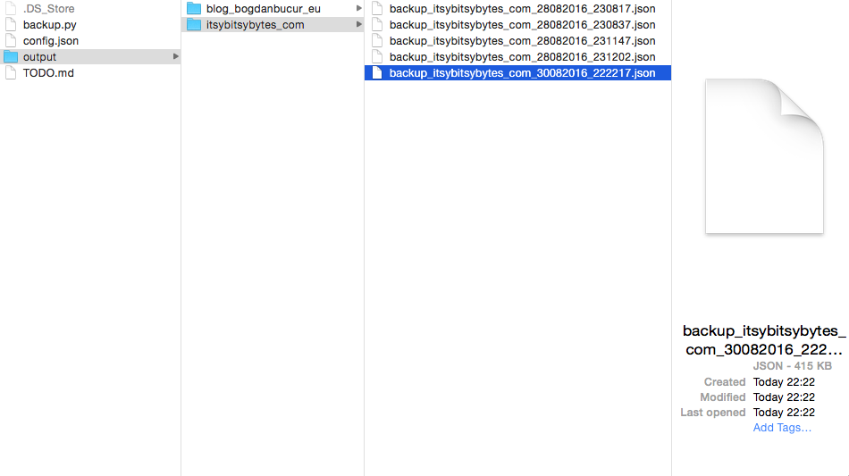
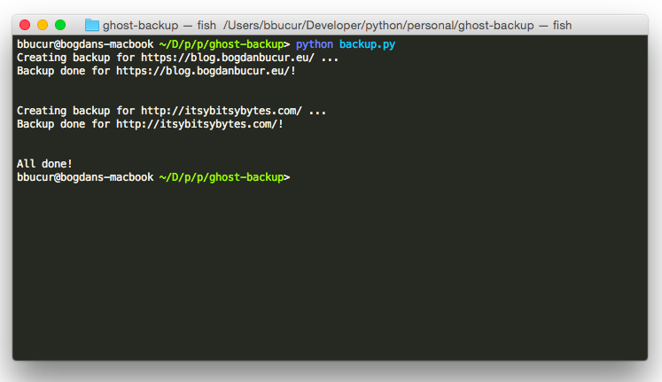
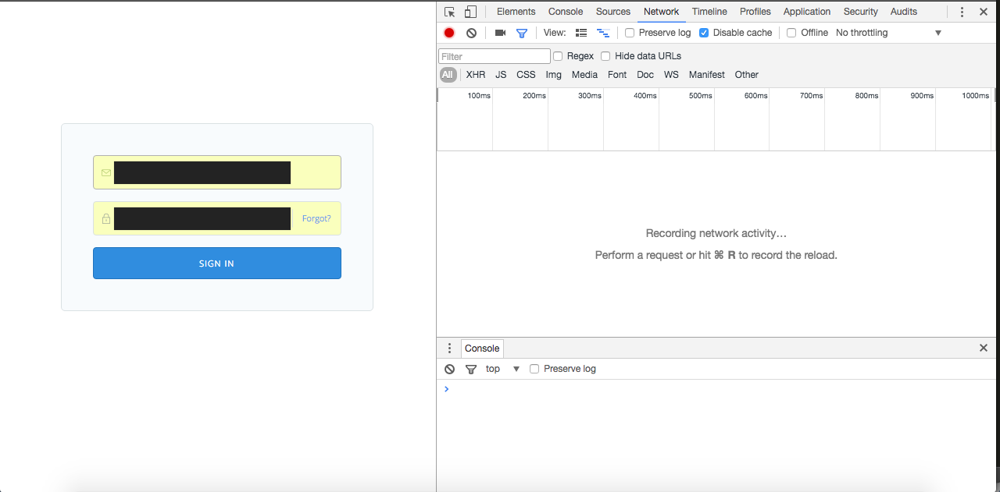

Ghost backup script
A helpful tool for the lazy, this python scripts allows an easier backup of your Ghost blog(s) database. Check out the Github page for the code, my blog post for some insights or just read the instructions below.
Download
How to use it
After you download the archive from Github or just the backup script itself, you have to configure the config.json file, entering your blog(s) details as well as some optional backup settings.
Alternatively, you can use the form provided on this page. Its code is entirely client-side so your password(s) will not be saved anywhere else but feel free to use a mock one and edit at the end just to be on the safe side :)
Settings
This is how the config file looks like:
{
"settings": {
"output_path": "output",
"max_backup_files": 5
},
"blogs": [
{
"url": "http://blog.domain/",
"client_secret": "client_secret",
"username": "admin_username",
"password": "admin_password"
}
]
}
-
output_path refers to the folder where the backup will be made. The default value is "output". Inside there will automatically created folders for each of your blog, just like in the printscreen below.
 - max_backup_files refers to the maximum number of backup files kept. The default value of 5 means that only up to 5 backup files are saved for each blog. After this, the oldest file in the list will be automatically deleted, keeping only the 5 most recent ones so it won't clutter your hard drive. Setting it as "-1" will disable this option.
- url refers to blog's root url. If you access your blog via http://blog.domain/ghost/ your url will be http://blog.domain/.
- client_secret is automatically generated by Ghost after you install the blog and is necessary for remote form submission. To find out your client secret, use the instructions in this section.
- username refers to blog's login username.
- password refers to the blog's login password.
Running the script
Open a terminal window and navigate to the location of the backup.py file. Then run python backup.py and watch the magic happen!

Running the script with a cron job
I will update this as soon as I find a solution!
How to find your client secret
Go to the blog's login page, open the browser's Developer Tools and go to the Network tab.
After you log in, look for the token request, select it and scroll down to see the form data. The client secret will be there.
Generate your config file
Use the form below to get the code for your config.json file.
Script settings
Blog(s) settings
Config file
Click on "Generate" to create your custom config file and then copy the code to config.json.